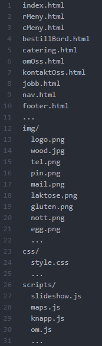

Design
26.09.18
Emilie Kalleberg, Vidar Michaelsen, Sarunas Juskenas, Anne Mosvold Ørke, Gunvor Huso
Prosjektet
- Navn på klient: Dugurd
- Kontaktperson: Jens Jenssen, eier
Mål og bruker
Den imaginære restauranten, Dugurd, trenger en nettside. Her er målet at brukeren skal bestille bord og/eller catering fra restauranten. Vi ønsker derfor å treffe enhver kunde som besøker siden. Restauranten serverer norsk tradisjonsmat, og det er også ønskelig å treffe et eldre publikum. Siden må derfor være enkelt utformet slik at man ikke mister kunder på grunn av en for komplisert nettside.
Siden forrige innlevering av P1 er det lagt til en eksta side, kalt "Søk jobb". Vi vil derfor prøve å dekke noe av kravene i P1 for denne siden, i denne leveringen.
Generell layout

Designet på nettsiden skal gjenspeile en norsk hytte. Det største virkemiddelet vi bruker for å oppnå dette er bakgrunnsbildet for hele nettsiden. Nettsiden vil ha et variert publikum og må derfor være enkelt utformet. For å holde siden enkel har vi valgt å bruke et svært begrenset fargepallett. Til navigasjonsbaren, artikkelen og footeren har vi valgt den samme mørke, grå fargen (#262626, opacity: 20%). I sterk kontrast til dette har vi valgt å bruke hvit(#FFFFFF) til skriften. Målet med nettsiden er at brukeren skal bestille bord eller catering fra restauranten. Disse sidene må derfor være enkle å finne. Dette gjør vi ved å legge navigasjonsbaren på toppen av nettsiden, da kan man enkelt navigere seg fra side til side. Logoen til restauranten ligger også i navbaren, for at man fort skal kunne se hvilken nettside man er på. Man skal også kunne trykke på logoen for å komme tilbake til forsiden. Nettsiden er utformet for PC-brukere, men vi skal bruke responsive design for å gjøre brukeropplevelsen god også på mindre skjermer som mobil og nettbrett. På standard computerskjerm skal skriftstørrelsen være 24pt på navigasjonselementet og titler, og 18pt på standard tekst. Disse skriftstørrelsene skal skaleres ned eller opp basert på skjermstørrelsen
I menyen vil vi bruke fonten "Fjalla one", som er den samme fonten som "Restaurant" i logoen. I tillegg har vi tenkt at menyen skal være i store bokstaver. I overskrifter vil vi bruke fonten "Lobster", som er den samme fonten som "Dugurd" i logoen. Begge steder vil vi bruke "Verdana" som fallback, og det er også den fonten som vil bli brukt til all annen tekst på nettsiden.
Hovedside – index.html
Hovedsiden vil være det første besøkende av nettsiden vil se. Det vil ikke stå noen informasjon på denne siden.
Det vil kun være et stort bilde av matretter som restauranten tilbyr. Tanken er å få inn et av javaScript-elementene
inn her, og dermed lage et slideshow med forskjellige bilder som representerer restauranten på en fin og imøtekommende måte.
Bildene skal dekke hele vidden til skjermen (100%), og dekke fra menylinjen til bunnen av siden. I tillegg skal bildene
si noe om hva som tilbys, og forhåpentligvis lokke til seg den besøkende og på denne måten bidra til å gi restauranten
flere besøkende, og/ eller at flere benytter seg av catering-tjenesten. Siden skal ha et enkelt utseende slik at det er
lett å oppdage hovedmenyen. Her har vi også valgt å ha god kontrast mellom den hvite skriften mot en svart/grålig
halvtransparent bakgrunn. Logoen er også sentrert i menyen, slik at den er lett å legge merke til. Det er i tillegg
hvit mot den svarte bakgrunnen, og blir derfor et blikkfang på grunn av kontrasten mellom mørkt og lyst. Et annet element som skal gjøre hovedsiden lett å bruke
er at det ikke vil være muligheter for å scrolle på forsiden. Man kan kun trykke på de forskjellige meny-knappene øverst på siden.
Hovedsiden vil på denne måten imøtekomme kravene om brukervennlighet, norsk tema i form av bildene som blir vist, og gjennom utseende
på logoen, ønsket om at hovedsiden ikke skal være scrollbar og at man får innsyn i hva slags mat som tilbys gjennom bildefremvisningen.
Vi valgte her bort å bruke tre-tema på hovedsiden for at den skal bli mer oversiktlig, og for å gjøre det lettere for blikket å se menyen i toppen.
Det ble et renere utseende og dermed mer brukervennlig. I tillegg er menyknappene store og enkle og bruke, med navn som er beskrivende for innholdet på hver del-side.
Dette skal bidra til å gjøre det lettere for også eldre brukere av nettsiden.

Meny - Restaurant - rMeny.html
Denne siden vil vise menyen til Dugurd. Her kan man se all den forskjellige tradisjonsrike maten som blir tilbudt ved restauranten. Siden eksisterer for å gi potensielle kunder informasjon om hva som tilbys, samt lokke dem inn med urnorske retter. Vi vil ha en del lunsjretter, men også forretter, middagsretter og dessert.
Matrettene vil vises som bilder med en forklarende bildetekst som forteller brukeren navnet og prisen på retten, samt noen av nøkkelingrediensene. Vi vil også inkludere symboler for vanlige allergener. Det skal være mye luft mellom bildene, og det skal være åpenbart hvilke bilder teksten tilhører.

Meny - Catering - cMeny.html
Dugurd tilbyr også catering, men menyen er ikke identiske. Cateringmenyen skal informere om hva slags mat brukeren kan bestille gjennom cateringtjenesten og hvor mye det koster.
Catering-tjenesten vil tilby forskjellige ”pakker”, der man kan velge internt i pakken hvile retter man vil ha fra en forhåndsbestemt liste. Jobben til catering-menyen er å vise fram alt som kan velges mellom i de forskjellige pakkene.
Pakkene vil være for eksempel (x * (forrett, hovedrett, dessert)), eller (y * (lunsj)), der bildeteksten vil si noe om hvor mange personer pakken kan dekke. Resten av siden vil liste opp alle matrettene innenfor hver kategori, slik at hver matrett har en åpenbar plass i pakkene. Ønsker man mer valgfrihet, må man kontakte Dugurd via telefon eller mail.


Bestill bord – bestillBord.html
Her ser vi først at menyen øverst på skjermen har endret seg noe. Vi ønsket å legge logoen øverst til venstre slik at den ikke ble forstyrrende eller i veien for
innholdet på sidene. Dette oppsettet på menyen er likt på alle de andre del-sidene, med unntak av hovedsiden naturligvis.
Videre ønsker vi å ha litt informasjon på halve delen av siden, for så å ha en boks hvor man først velger hvor mange man skal reservere
bord til, deretter hvilken dato og klokkeslett. Det vil så vises en melding om det er ledig bord eller ikke, og hvis det er det
kan man trykke seg videre til en side der man kan fylle ut kontaktinformasjon som navn og telefonnummer, og evt e-post. Er det
ikke ledig vil det komme beskjed om dette, for at det deretter vil være mulig å trykke seg tilbake for å velge en annen dato eller et annet klokkeslett. Boksen som
skal inneholde dette vil ligge på den andre delen. Det vil bli lite innhold på siden, og mindre å forholde seg til å hvert steg av bordreserveringen. Dette øker igjen
brukervennligheten.
Denne del-siden vil oppfylle blant annet kravene om å kunne bestille/ reservere bord elektronisk. Vi ønsker derfor å lage nettopp dette så enkelt som mulig,
slik at de fleste og helst alle skal kunne få det til. Dette vil dermed også oppfylle kriteriet om at elektronisk bordreservasjon vil minke antallet innringninger. Også denne
siden tilfredsstiller ønsket om brukervennlighet.


Catering - catering.html
Catering siden skal bestå av mange input-felter og checkboxer som skal hente den informasjonen fra brukeren som trengs for å kunne bekrefte bestillingen. Informasjonen som trengs og må hentes fra brukeren for å kunne gjøre det er kontaktinformasjon, den ønskede cateringpakken, antall personer og eventuelle allergener. Når all informasjon er skrevet inn og bekreftet med en «Submit» knapp skal siden skrive ut at bestillingen fra brukeren har blitt bekreftet.

Om oss - omOss.html
På denne nettsiden skal restauranten presenteres. Teksten skal fortelle om selve restauranten, maten som serveres der og tjenesten den tilbyr for kunder,
altså mat servering og catering.
Teksten skal være delt opp i to deler. Den ene delen skal være plasser øverst i venstre hjørnet av tekstboksen og den andre nederst i høyre hjørnet.
Resten av innpakningen skal være tatt opp av bilder. Disse bilder skal være av kokker som jobber på restauranten og signaturrettene de har lagd. Når man flytter pekeren
over bildene skal bildet bli mørkere og det skal komme opp tekst oppå bildet som forteller litt om kokken/retten.

Kontakt oss – kontaktOss.html
På denne siden skal man finne all den informasjonen man trenger for å kunne kontakte eller besøke restauranten. Her er menyen lik som på de andre sidene, men når man trykker på kontakt oss knappen vil den bli større og endre farge slik at man lett kan se hva man trykker på. Siden vil bestå mest av informasjon. Øverst vil det være åpningstider og under vil det være knapper som går direkte til bestilling av bord og catering. Dette er for å gjøre det enda lettere å komme dit man vil og enda mer intuitiv. Under knappene skal kontaktinformasjonen stå, med epost-adresse, telefonnummer og adressen. Hvis man trykker på epost-adressen skal brukerens mailprogram åpnes og mailadressen til Dugurd skal være fylt inn i mottakerfeltet. På denne siden skal det også være et kart med lokasjonen til restauranten. Det skal være interaktivt. Man skal altså kunne zoome og flytte det rundt.
I forhold til design skal denne siden være lagt opp enklest mulig slik at man ikke trenger å lete etter den informasjonen man vil ha. Knappene skal være store og man skal lett kunne forstå hva de gjør. Dette oppfyller også kravet om å ha knapper som sender en videre på kontakt siden og at de skal være brukervennlige. Et annet krav som blit oppfylt på kontakt oss siden, er at man skal kunne se hvor restauranten ligger på Google Maps.
I footeren skal den viktigste kontaktinformasjoen stå, slik at den er tilgjengelig på alle sidene.


Søk jobb – jobb.html
Her skal det være mulig å søke jobb hos Dugurd. Under "Hva vil du jobbe med?", vil det være en dropdown meny. Der kan man velge hva man vil søke om, som for eksempel kokk, servitør, hovmester... Videre må man fylle inn navn, epost og telefonnummer og alt dette må være fylt inn. Det skal også være to større felt der man skal skrive om utdanning og arbeidserfaring og hvorfor man vil jobbe på Dugurd. Disse feltene vil være en del større enn det de er på mockupen. Helt nederst skal det være en knapp sender inn skjemaet. Når man trykker på knappen vil man få opp en melding om at søknaden har blitt sent og litt info.
Også her skal siden være lagt opp enklest mulig, slik at der skal være intuitiv hva man skal gjøre. Man skal enkelt forstå hva man må fylle ut og det skal være minst mulig unyttig info ellers på siden. Knappen nederst på siden skal være stor og med tydelig tekst, slik at alt blir mest mulig brukervennlig.


Navigasjonsbar - navbar.html
Dette dokumentet skal inneholde selve navigasjonsbaren. Alle drop down menyer og knapper skal være pakket inn i en div. Brukeren skal ikke ha direkte tilgang til dette dokumentet, men dette dokumentet skal være inkludert i alle de andre html filer nettstedet er består av. Vi bestemte oss å flytte ut navbaren til en egen fil for å slippe unna å kopiere samme koden om og om igjen på hvert dokument. Dette også gjør koden av andre html filer mer oversiktlig, lettere å lese og redigere.
Mobil
For at nettsiden også skal være enkel å bruke på mindre skjermer, har vi valgt å lage en mobilversjon. Som man ser av det første bildet vil dette være forsiden, dette vil bare bli en nedskalert versjon av forsiden på PC-versjonen. Navbaren har vi nå flyttet til høyre hjørne som en dropdown meny. Når man trykker på denne vil menyen komme fram og logoen bli dyttet til venstre hjørne. Bilde nummer tre viser hvordan nettsiden vil se ut når du er inne på en av sidene.

JavaScript
På forsiden trenger vi en JavaScript funksjon som viser bilder dynamisk. Det skal være et slideshow med bilder av maten som tilbys på Dugurd. Slideshowet skal automatisk rullere gjennom rundt fem bilder. Bildene skal skli inn raskt, med et par sekunders pause mellom hver slide.
På siden "Kontakt oss" skal vi ha et kart fra Google Maps som viser hvor restauranten ligger, dette kan vi også gjøre med JavaScript. Kartet skal sentreres på Hemsedal, ettersom det er der restauranten skal være. Nærmere sentrering bestemmes senere.
På flere av sidene trenger vi knapper, dette kan vi fikse med JavaScript. Blant annet en knapp for å sende inn jobbsøknad, for å bestille catering og for å bestille bord. Når man trykker på knappen for å sende inn jobbsøknad vil det sjekkes om de essensielle boksene har tekst i seg, altså navn, nummer og epost.
På "Om oss"-siden vil vi bruke en JavaScript-funksjon. På siden vil det i utgangspunktet være en del tekst og noen bilder. Når man har pekeren over et av bildene vil bildet bli mørkere og det vil komme tekst oppå bildet.
Struktur
Ansvar
| Filnavn | Beskrivelse | Ansvar | Frist |
|---|---|---|---|
| index.html | Hovedsiden | Gunvor | 03.11.18 |
| rMeny.html | Restaurantmenyen | Vidar | 03.11.18 |
| cMeny.html | Cateringmenyen | Sarunas | 03.11.18 |
| bestillBord.html | Siden der man kan bestille bord | Emilie | 03.11.18 |
| catering.html | Siden der man kan bestille catering | Vidar | 03.11.18 |
| omOss.html | Informasjon om restauranten og historien | Sarunas | 03.11.18 |
| kontaktOss.html | Informasjon for å komme i kontakt med restauranten | Anne | 03.11.18 |
| jobb.html | Side der man kan søke jobb | Emilie | 03.11.18 | nav.html | navigasjonsbaren | Anne | 03.11.18 |
| style.css | All stylingen til siden | Alle | 04.11.18 |
| slideshow.js | JavaScript fil som lager slideshow | Gunvor | 03.11.18 |
| maps.js | JavaScript fil der google maps blir implimentert | Anne | 03.11.18 |
| knapp.js | JavaScript der funksjonenen til alle knappene er | Emilie, Anne, Vidar | 03.11.18 |
| om.js | JavaScript fil som fikser funksjonene på om oss siden | Sarunas | 03.11.18 |